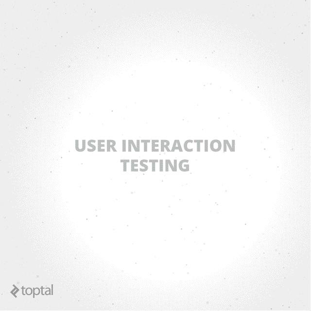

React.js
Testing React Components
Created by Jorge Florian / Transformers Pod
Introduction to Javascript Testing
How does it work?
Frameworks/Libraries/Tools for testing


Mocha framework
- A feature-rich JavaScript test framework
- Runs on Node.js and in the browser
- Test coverage reporting
- Use any assertion library you want
Getting started with Mocha
$ npm install mocha
$ mkdir test
$ $EDITOR test/test.js
Radiography of a test file
describe('[Name of the class/component to test]', function() {
before(function() {
// runs before all tests in this block
});
after(function() {
// runs after all tests in this block
});
beforeEach(function() {
// runs before each test in this block
});
afterEach(function() {
// runs after each test in this block
});
// test cases
it('should ....', function () {
// first test case
});
});
var assert = require('assert');
describe('Array', function() {
describe('#indexOf()', function() {
it('should return -1 when the value is not present', function() {
assert.equal(-1, [1,2,3].indexOf(4));
});
});
});
$ ./node_modules/mocha/bin/mocha
Array
#indexOf()
✓ should return -1 when the value is not present
1 passing (9ms)
- tests are running under Nodejs
- Our Javascript code should be tested under a Browser environment
- We need to find a way to run our code in a Browser
A tool which spawns a web server that executes source code against test code for each of the browsers connected.
$ npm install --save-dev karma karma-mocha karma-chrome-launcher
module.exports = function (config) {
config.set({
frameworks: ['mocha'],
files: ['test/**/*.js'],
browsers: ['Chrome'],
singleRun: true
});
};
Configure browserify
$ npm install --save-dev browserify karma-browserify
module.exports = function (config) {
config.set({
frameworks: ['mocha', 'browserify'],
files: ['test/**/*.js'],
preprocessors: {
'test/**/*.js': [ 'browserify']
},
browsers: ['Chrome'],
browserify: {
debug: true
},
singleRun: true
});
};
Lets remove the emergency browser windows with PhantomJS
$ npm install --save-dev karma-phantomjs-launcher
assertion library for node and the browser that can be delightfully paired with any javascript testing framework.
chai.should();
foo.should.be.a('string');
foo.should.equal('bar');
foo.should.have.lengthOf(3);
tea.should.have.property('flavors')
.with.lengthOf(3);
var expect = chai.expect;
expect(foo).to.be.a('string');
expect(foo).to.equal('bar');
expect(foo).to.have.lengthOf(3);
expect(tea).to.have.property('flavors')
.with.lengthOf(3);
//var assert = require('assert');
var expect = chai.expect;
describe('Array', function() {
describe('#indexOf()', function() {
it('should return -1 when the value is not present', function() {
//assert.equal(-1, [1,2,3].indexOf(4));
expect([1,2,3].indexOf(4)).to.equal(-1);
});
});
});
General diagrama of the testing tools used and how they interoperate
React Testing
Front-end code isn’t about manipulating data. It’s about user events and rendering the right views at the right time. Front-ends are about users.
How do I test components?

Most tests will follow the same pattern:
- Mock component dependencies, props and context.
- Render.
- Find specific node.
- Check contents.
React Test Utility
require('react-dom/test-utils')- Simulate
- renderIntoDocument()
- mockComponent()
- isElement()
- isElementOfType()
- isDOMComponent()
- isCompositeComponent()
- isCompositeComponentWithType()
- findAllInRenderedTree()
- scryRenderedDOMComponentsWithClass()
- findRenderedDOMComponentWithClass()
- scryRenderedDOMComponentsWithTag()
- findRenderedDOMComponentWithTag()
- findRenderedComponentWithType()
Example: Water component
Let's test our Water component
describe('Water component', function () {
var renderedComponent;
var textElement;
var mockProps = {initialTempeture: '18'}
beforeEach(function () {
renderedComponent = ReactTestUtils.renderIntoDocument(Water component: change tempeture
it('should be gas when tempeture is above 100 celcious degree', function () {
var input = ReactTestUtils.findRenderedDOMComponentWithTag(renderedComponent, 'input');
input.value = '150';
ReactTestUtils.Simulate.change(input);
expect(textElement.innerHTML).to.include('GAS');
});
it('should be solid when tempeture is above 0 celcious degree', function () {
var input = ReactTestUtils.findRenderedDOMComponentWithTag(renderedComponent, 'input');
input.value = '-10';
ReactTestUtils.Simulate.change(input);
expect(textElement.innerHTML).to.include('SOLID');
});